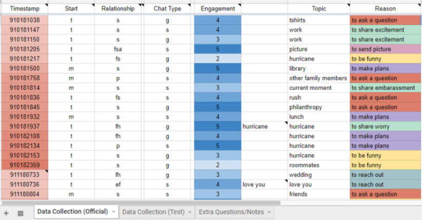
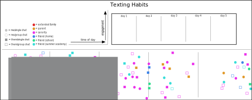
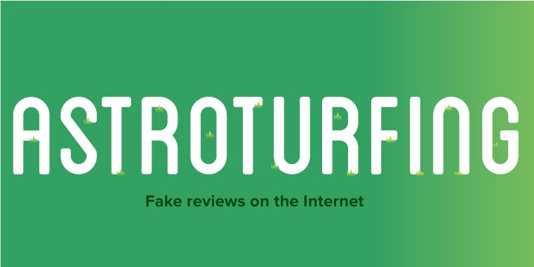

August
Week 1
In the first week of class, we had an introductory day and then basically jumped right into doing work. We learned about how to navigate the canvas page, and began to learn about our Data Collection Project. We also learned about the Dear Data project. This was pretty interesting for me because I didn't realize that information could be visualized in such a cool way. It encouraged me to start recording my data.
Week2
We started off the second week by looking at an article from Steven Katz titled "Classical rhetoric, technology, and the Holocaust." We used this reading to develop ideas about ethics in relation to what we would be doing in class. With this, we began to plan for what kind of data we wanted to collect.
September
 {kind=link}
Week 3
The third week we took a break from coming to class, with the purpose of meeting with Dr. Lindgren about our ideas for Data Collection. At this time, I had the idea to record data from my text messages. I wanted to see the relationship between who I texted the most and the engagement I had with them, along with other factors.
We set up conferences with Dr. Lindgren, then had to prepare a draft excel sheet for what our data collection would look like. My conference was pretty helpful, and I came out with an excel sheet that I started working with the next day.
Week 4
Week 4 was pretty slow in terms of class becuase we were mostly responsible for collecting our data. I realized it was a little harder to collect my data than I thought it would be. I luckily had all of the information basically already recorded on my phone, so throughout the day I would take breaks to record whatever text I had sent or received.
We had a reading from A. Kirk about data visualizations, and had to take notes in our Journals of Learning about "CHRTS" which is: Categorical, Hierarchical, Relational, Temporal, and Spatial. We had to begin thinking about how we would make our Data Visualization with CHRTS in mind.
Week 5
We finished collecting data and started to design our Data Visualization. At first I had no idea where to start. I wanted to do something that was representative of how a screen looks on an iPhone when someone is texting. We started to learn how to design in a program called Inkscape, which was fun to use but hard to get a hang of at first.
We watched a couple of tutorials that helped us understand how Inkscape works, and then revised some of our ideas for our Data Visualization project. Watching the tutorials didn't really help me with my design idea, but I definitely was able to undertstand a lot more about how the program worked. I think that if I had more examples of what other students were doing or had done, then I could've come up with something better.
We met a couple times in groups to peer-edit each other's ideas, but when I met with people, none of their suggestions really stuck with me. I basicaly waited for myself to figure out a new idea that I thought I could potentially execute in Inkscape.
Week 6
I eventually figured out how to make the visualization look how I wanted in Inkscape, but it also felt very cluttered and wasn't as appealing as I thought it was going to be. I showed it to my classmates when we were group editing, and many said that I should try to come up with a different visualization idea. It took a couple tries, but I was able to figure out a new layout.
I came up with my new idea by looking over the Dear Data projects we had looked at in the first couple of weeks. This not only gave me my idea for my visualization, but also helped me better understand my data.
Towards the end of the week, we had to start coming up with the title, legend, and labels of our visualization. This was pretty easy for me because my design was a lot like a scatter plot.
October
Week 7
After finishing the Data Visualization project, we started to look at resources for our Explained Video project. We watched a couple example explained videos on YouTube, then talked about them in class to get a jist of what they were and the different aspects typically found in them.
Once we had an understanding of what explained videos were, we were put into groups of three and started brainstorming topics for our project. On the resources page of our Canvas site, we had all different types of programs to choose from for our video project. My group chose to use Bandica for our screen recording and Windows Movie Maker for the actual video editing.
We watched a couple different videos about biases in media which was really helpful and enlightening, especially when thinking of a topic to explain. By the end of the week, my group decided that we were going to do our Explained Video on Astroturfing.
Week 8
I didn't know what Astroturfing was when we first started to research it, so I learned a lot when we were preparing. We watched an explained video on Net Neutrality, then had to walk through the video and explain different aspects of it as one of our classwork/homework assignments. It was interesting to do this because I really had to pay attention to what was going on in the video. Before, when I would watch advertisements, I wouldn't notice the difference in how one shot changed to a different one (the transitions) or the various effects that one can apply to a video.
As we learned from the Net Neutrality video, we started to have more ideas about what we wanted to do for our Astroturfing project. We continued to learn about Fair Use and basic cuts, which were really helpful in choosing what we wanted to do in our video.
Later in the week we started to draft some of the panels for what we wanted in each scene of our video. My group broke down the scenes bsed off of the sections of research that we did. I was in charge of the examples, so I found a couple images and videos that I thought helped explain what Astroturfing is.
Week 9
During the ninth week of classes we mostly just worked on continuing our research and figuring out images to put in our videos. My group worked pretty well together, so we were able to find some good information. By the end of the week, we were supposed to be prepared to start working on our videos.
Week 10
Week 10 was mostly working on our videos. We had some time in class, but other than that, class time was for editing and figuring out the next steps our group needed to take in finishing the project. During this time my group worked pretty diligently on our research, but didn't get very far with the actual video.
November
Week 11
During week 11 my group really started to figure out what we were going to put in our video. I chose to do two separate examples: one that explained how astroturfing can work in politics, and one that explained how it can happen in a person's everyday life.
My first example was from the movie Sydney White, starring Amanda Bynes. I chose this becuase it really helped explain how astroturfing works to people that are my age, but it also applies to people that are in college because it shows how the collegiate presidential election works and how people will use astroturfing techniques to win votes. The other example I used was about a Japanese McDonald's using astroturfing techiniques to get customers to buy a quarter pounder.
This was all very interesting to me and through my research I not only learned what astroturfing was, but also how to explain it to others, which my group showed in our explained video.
Week 12
Week 13
Week 14
Week 15